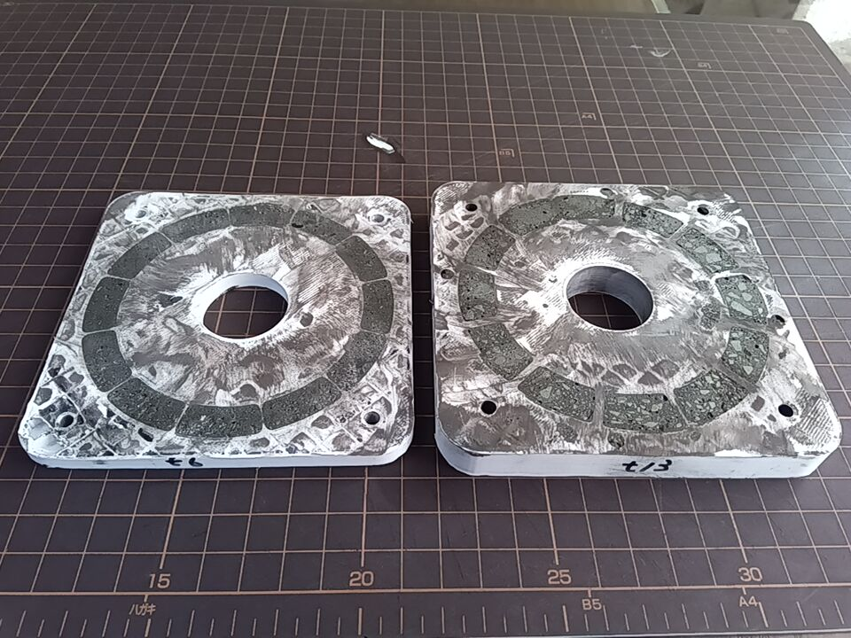

前回の試作品でもコギングは減少できたが、更に減少させるためにコギング抑制板の容積を増やした
コギング抑制板の形状
前回 幅10mm 厚み6mm 全ての角はR0
今回 幅14mm 厚み13mm 全ての角はR2
材料は前回同様アンテナ用フェライトロッドを砕いてエポキシ樹脂で固めた
フェライトロッドは購入時の状態では不導体でしたが加工したことで通電するようになった
測定した位置によって値は異なるが、大体2～7MΩ
軽い力でもLEDは光る（LED10個を直列に結線）
垂直軸型 負荷（LED12個）で18.2V発生
水平軸型 負荷（LED35）個で59.8V発生
水平軸型 負荷有で16.4V、無負荷で58.0V発生
ギヤ比 3:1 の手回しハンドルで発電してみた
手回しハンドル負荷有で18.5V発生
大まかな構造

結果
| 試作 | 垂直軸型(LED) | 水平軸型 (LED35個) | 水平軸型 (100V5W) | 水平軸型 (無負荷) | 手回し |
|---|---|---|---|---|---|
| 今回 | 18.2V(12個) | 59.8V | 16.4V | 58.0V | 18.5V |
| 前回A | 20.7V(12個) | – | 19.7V | 37.9V | – |
| 前回B | 36.0V(23個) | – | 35.3V | 87.5V | 51.5V |
考察
負荷の大小に関わらず、コギング抑制板で磁束は通りが良くなった
・無負荷、負荷が小さい場合
逆起電力により発生する磁束は微々たるもの
↓
発電電圧は高くなった
・負荷が大きい場合
負荷に比例してコイル電流が増える
↓
逆起電力により発生する磁束も負荷に比例して増える
↓
コアが飽和に近づく、若しくは飽和する
↓
有効インダクタンスが低下する
↓
発電電圧が低くなった
発電量、発電時の負荷を想定し、それに合わせたコア、コギン
グ抑制板を検討する必要が有ると考えています
他には、コギング抑制板は不導体であること、試作品では強度
や精度が悪かったので改善の必要が有ると考えています
実用化に向けて
無謀かもしれませんが、実用化を目指して検証を進めています
現時点での目標は、家庭用扇風機でスマホを充電できるくらいの
発電量を発生させること
屋外では実験の条件を一定にできない、風洞設備も無いので「家
庭用扇風機の風」という限られた条件で検証を進めています
更に検証を進めるために
コア、コギング抑制板の材料の調達は個人では少量入手、加工、
費用等問題山積です
個人でも入手可能な代用品、加工方法等情報を頂けると、とても
助かります
こちらのページGitHubページ も閲覧頂けると幸いです
上記にもあるように、材料の調達ができないと
現行の装置ではネオジム磁石の磁束は多すぎる可能性が有るので
フェライト磁石に替えてもそこそこの発電量が得られるか検証す
ることくらいです
前回のコアとコギング抑制板(t6)と今回のコギング抑制板(t13)

磁束は鋭角に向きを変えることはできません、できるだけ大きなRを付けたいです
現行のコアとコギング抑制板
寸法や平面が出せなくてコアとコギング抑制板の接触面積が小さい
試してみたいコアとコギング抑制板の分割型
試してみたいコアとコギング抑制板の一体型
ここから下は前回の実験結果そのままです
軽い力でもLEDは光る（LED10個を直列に結線）
コアコイルを使った場合に考えられる損失
１．コアに発生する渦電流による損失
２．ヒステリシス損
３．残留磁気による反作用
４．機械的損失
５．負荷に応じて発生する反作用である逆起電力
６．コギングトルクによる損失
７．漏れた磁気により発生する渦電流による損失
家庭用扇風機を使って発電してみた
（KOIZUMI KLF3018E9 風力強、豆球は100V5W、LEDは直列に結線）
A.コギングが残っているが、扇風機の風で自然にプロペラが
回るように磁石とコイルの間隔を調整した場合
水平軸型 負荷有で19.7V（101mA,2.0W）、無負荷で37.9V発生
垂直軸型 負荷有で20.7V、無負荷で21.1V発生
B.コギングは残っているが、プロペラが回り始めるまで手を
貸すと回り続けるよう磁石とコイルの間隔を狭くした場合
水平軸型 負荷有で35.3V（181mA,6.4W）、無負荷で87.5V発生
垂直軸型 負荷有で36.0V、無負荷で36.7V発生
ギヤ比 3:1 の手回しハンドルで発電してみた
手回しハンドル負荷有で51.1V（264mA,13.5W）発生
損失を減らす対策として
１～３．アンテナ用フェライトロッドを使用
４．ベアリングを使って回転時に発生する摩擦を減らし、リング
状の磁石の反発を利用して接触による摩擦を減らした
５．発電すれば必ず発生する反作用で、流れる電流量に比例する
ので、コイルは全て直列に結線した
６．コアの両端部にコアと同じ材料を金槌で砕いてエポキシ樹脂
で厚みを均一にして固め、磁石が回転する円周上にコアに接
触する位置に配置、以降、コギング抑制板とします
７．磁石のコイルと反対側の面を、磁気飽和しない厚みの鉄板で
繋ぎ、コイルと磁石に磁束密度が環流するよう単相交流とし
た
大まかな構造
（写真上部は外側、下部は内側から見た状態）
コイルの両隣はソフトフェライトを粉砕して固めたコギング抑制
板
更に外側は発電用ネオジム磁石、内側に磁石がコギング抑制板に
接しないためのリング状のネオジム磁石、磁束密度の漏れを防ぐ
鉄板
コイル右側は軸受、磁石がコギング抑制板に接しないためのリン
グ状のネオジム磁石
更に外側はコギング抑制板を抑える板
今回の実験結果
扇風機の風だけではスマホを充電できるだけの電力は得られなか
った
発電量が上がらなかった要因として
コギング抑制板の容積が小さく磁気が飽和してコギングが残った
フェライトロッドを金槌で砕いたものをエポキシ樹脂で固めてコ
ギングを抑制する板を作成したが、粒子の大きさのばらつきが大
きかった
試作品は強度、寸法精度が良くなかったので、磁石とコギング抑
制板との間隔に大きなばらつきが有った
実用化に向けて
ソフトフェライト、電磁鋼板、圧粉磁性体等を使って実験し、最
適な条件を探り出す
逆起電力は流れる電流に比例するので、電流を減らし（電圧を上
げて）てバッテリーに充電し、バッテリーから必要な電気を供給
する必要が有ると考えています
このように考えていますが、材料の調達は難しく、私には回路設
計はできないという課題に直面しています
関連動画について
インスタグラムに過去の動画を投稿していますので興味のある方はご覧ください
#モバイル風力発電機 #風力発電機プロトタイプ #家庭用風力発
電機 でよく似た画像が見つかると思います
本サイトに掲載された設計、構造は個人の研究、実験目的で公開されたものであり、使用等に際して生じた損害、事故、その他全ての問題について一切の責任を負いかねます
動画を再生するにはHTML5をサポートしたブラウザーが必要です